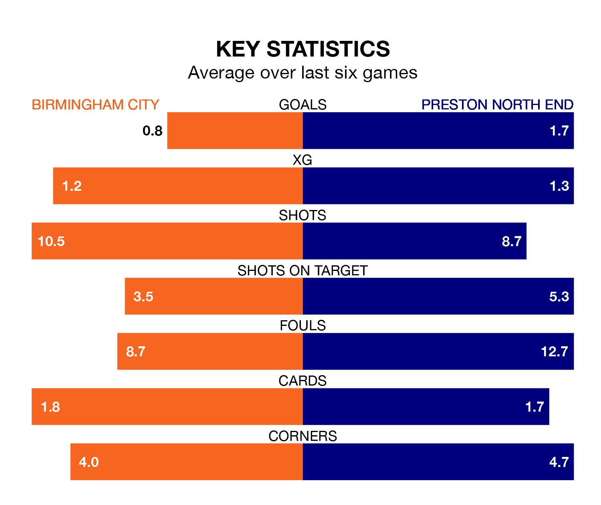

Birmingham City are on a terrible run ahead of hosting Preston North End at St Andrew's on Monday, with just one point collected from their last six games.
The Blues have picked up just one draw in their last six EFL Championship games, and face a Lilywhites side whose last six games have brought three wins and two draws.
In the last 10 years, Birmingham and Preston have played each other on 17 occasions. Birmingham won three of them, Preston eight, and they drew six times.
On average, the Blues scored 1.0 goal and the Lilywhites 1.3 in those matches.
Their last meeting was on September 19, when Preston won 2-1 at home.
Birmingham are 21st in the table after 39 games, of which they have won 10 and drawn nine, earning 39 points.
Preston are 13 places ahead of City in eighth, with 17 wins and eight draws putting them on 59 points.
With 43 goals in 39 games so far this season, the Blues are scoring at below the league average rate with 1.1 goals per game. And they are conceding more than average, letting in 61 goals at a rate of 1.6 per game.
North End, meanwhile, are average scorers, with 1.4 goals per game. They have also conceded 1.4 goals per game.
Birmingham's last match was on Friday, a 2-1 loss against Queens Park Rangers, with Juninho Bacuna getting the goal for the Blues.
Preston beat Rotherham United 3-0 last time out, also on Friday, with Emil Ris Jakobsen (two) and Duane Holmes on the scoresheet.
Monday's match will be refereed by Oliver Langford, who has taken charge of 23 EFL Championship games so far this season, issuing five red cards and booking 77 players. He has awarded two penalties.
The last Preston game Langford refereed was the 2-0 loss away at Sunderland on January 1. He is yet to oversee a match featuring Birmingham this season.
Updated: 10:31 (UTC), 31/03/24